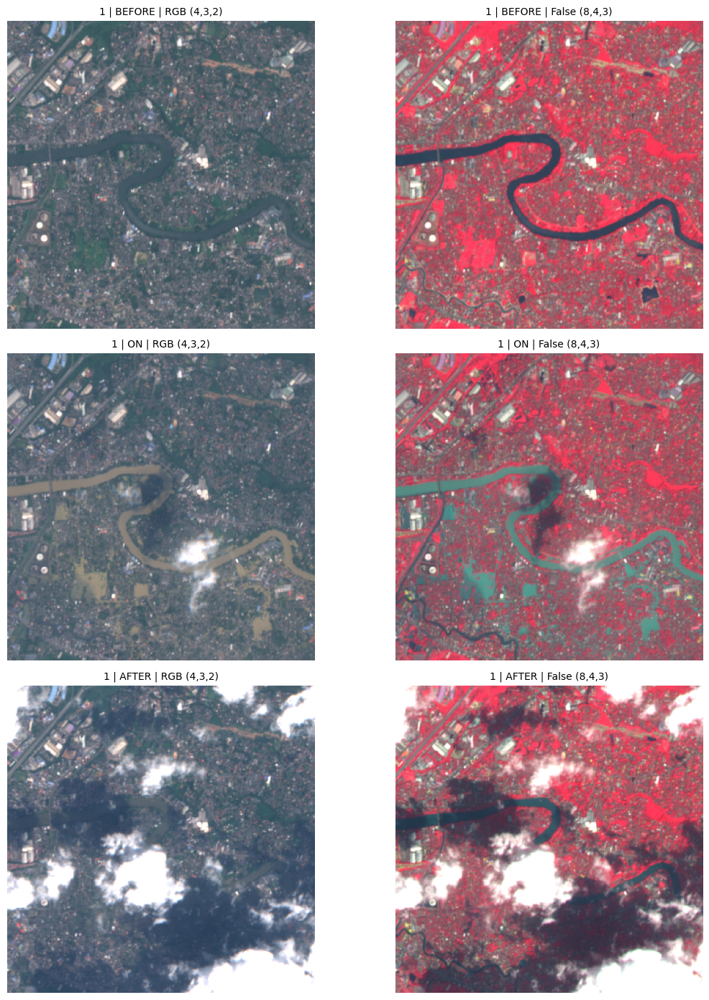
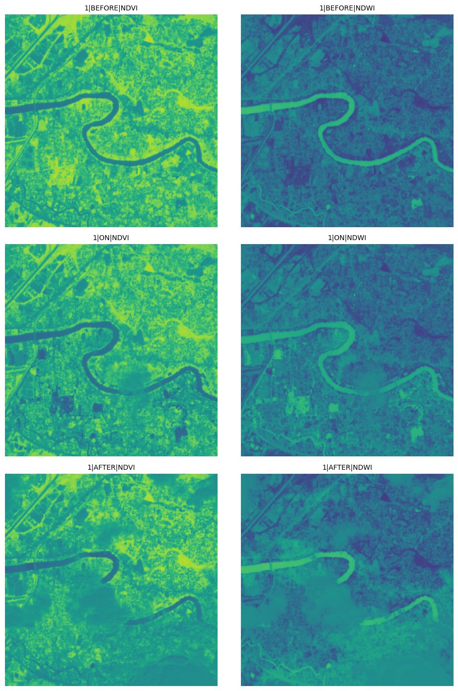
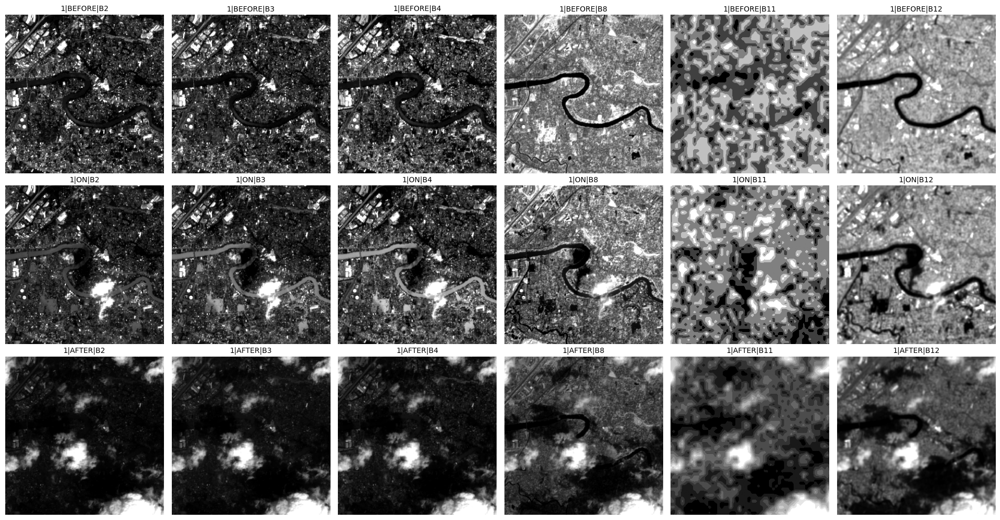
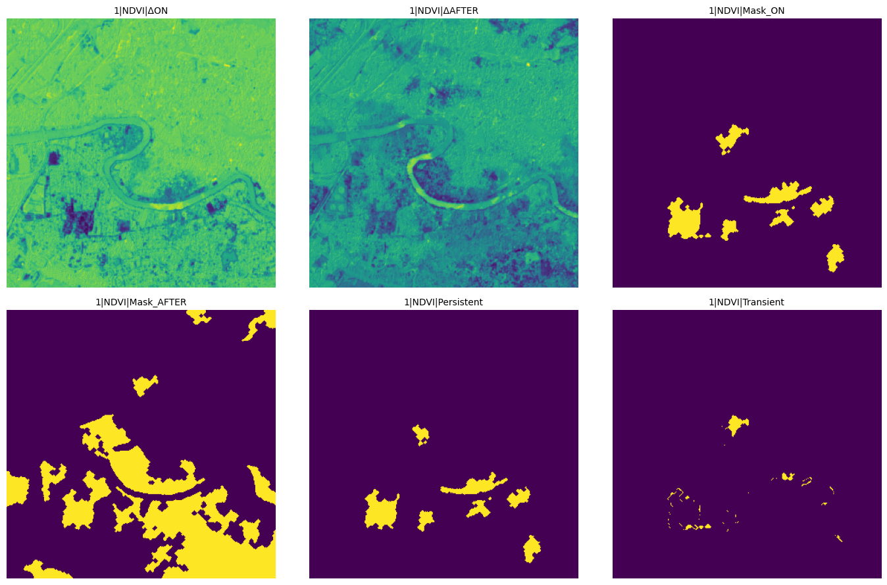
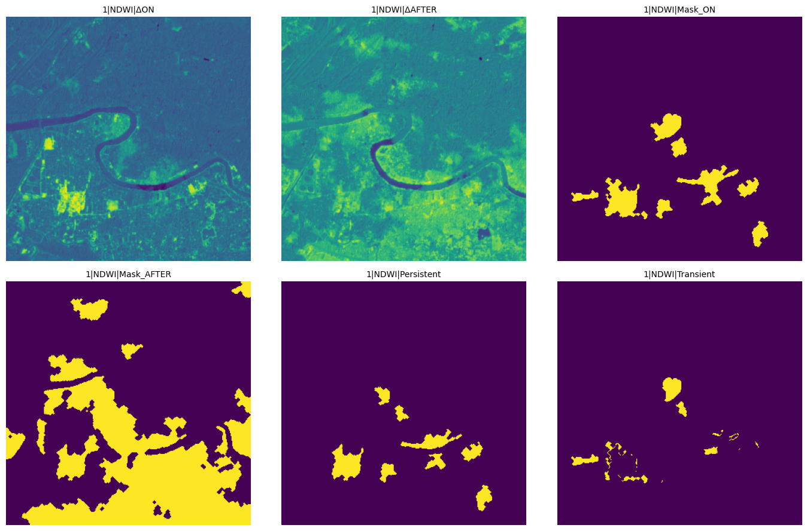
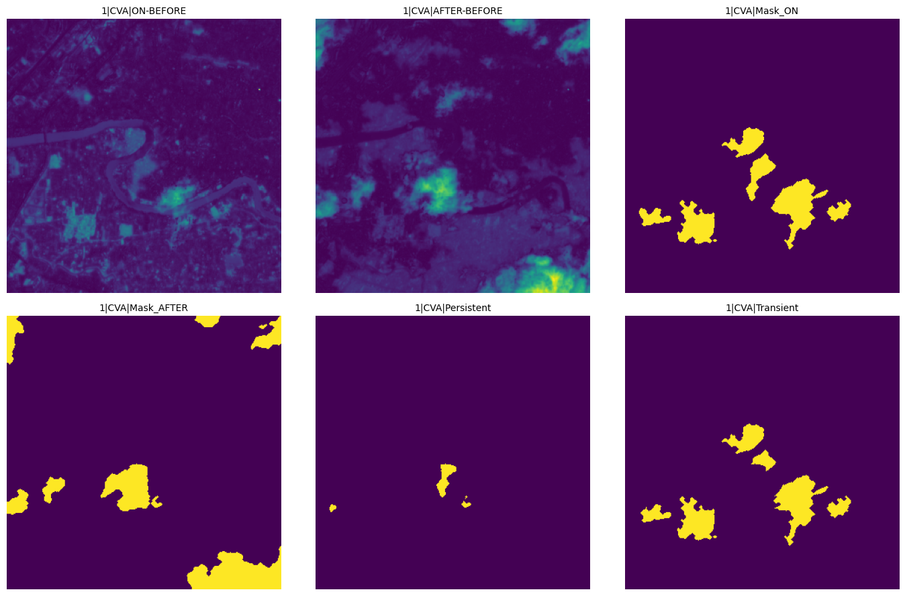
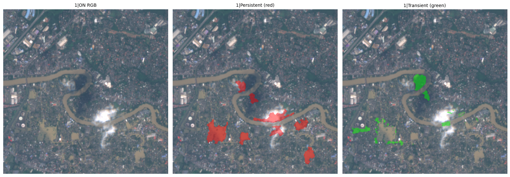

Data Input
Sentinel-2 MSI triplets organized as BEFORE, ON, and AFTER scenes for each location.
Weekly Progress
This week focused on validating Sentinel-2 MSI triplets and producing robust change masks from index-difference signals with clean export-ready outputs.
Dashboard
A compact summary of data inputs, processing strategy, and resulting artifacts.
Sentinel-2 MSI triplets organized as BEFORE, ON, and AFTER scenes for each location.
NDVI and NDWI delta analysis with Otsu thresholding and morphology-based cleanup.
GeoTIFF and PNG products including index maps, temporal change masks, and CVA magnitude views.
Pipeline
The sequence below was followed for each triplet to keep processing repeatable.
Visual Evidence
Representative outputs collected from the processing run.







Technical Core
Core equations and reduced pseudocode used to derive temporal masks.
// Reduced tri-temporal mask logic
d_on = idx_on - idx_before
d_after = idx_after - idx_before
mask_on = Otsu(abs(d_on))
mask_after = Otsu(abs(d_after))
mask_on = clean(mask_on)
mask_after = clean(mask_after)
persistent = mask_on AND mask_after
transient = mask_on AND (NOT mask_after)Notes
Practical takeaways from this run and continuation actions.
False-color views highlighted vegetation and moisture shifts better than RGB-only checks, while Otsu remained a strong adaptive baseline.
Notebook export is available below for direct review of the full execution sequence and outputs.
Run additional triplets, compare with manual annotations, and finalize derived features for baseline modeling.